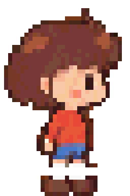
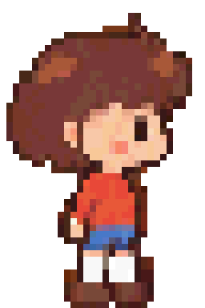
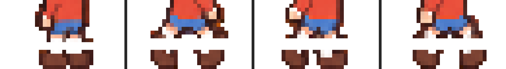
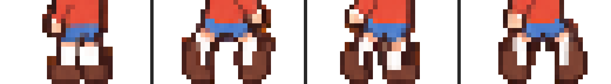
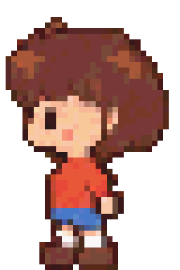
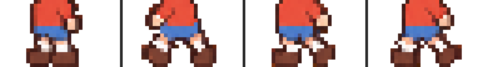

Построчный разбор альфа-канала всех 4 кадров обеих анимаций нашёл две разные причины на двух разных спрайтах. Обе — дыры в прозрачности между ногой и ботинком, просто разной формы. Ходьба вверх/вниз не тронута.
В исходнике между носком и ботинком шла полностью прозрачная полоса в 2–3 пикселя на всех 4 кадрах (ряды y=40–42 из 48) — ботинок визуально не крепился к ноге и при ходьбе казался отдельным, отстающим объектом. Разрыв закрыт переносом соседних непрозрачных рядов в пустую полосу — без сдвига всей фигуры, чтобы ступня осталась на той же линии земли, что и в остальных трёх направлениях.




Кадр 0 терял 2 ряда (y=41–42), кадры 1–3 — по 3 ряда (y=40–42). Высота разрыва не была одинаковой, поэтому точечная правка одного кадра не чинила остальные — пришлось определять границы разрыва отдельно в каждом кадре.
Здесь разрыва между ногой и ботинком не было — вместо этого в ряду y=41 (место, где бедро переходит в голень) кадры 2 и 4 обрывались на 1–2 прозрачных пикселя, а кадры 1 и 3 были сплошными. При проигрывании 4 кадров подряд это читалось как мигающая вертикальная щель, появляющаяся через кадр. Прозрачные пиксели в этой строке залиты цветом из ряда прямо над ними — силуэт, кадры не сдвигались.


Разделение ног ниже этой строки (голень/ступня) — часть нормального бокового силуэта шага и не трогалось, правка точечная: один конкретный ряд в двух конкретных кадрах.